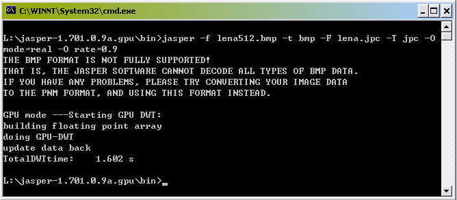

To solve this problem, we developed a DWT shader that runs on existing GPU hardwares. We implement the convolutionary based DWT and propose an indirect addressing technique that supports various boundary extension schemes. The proposed technique also unifies the computation of both forward and inverse DWT, hence making the shaders for FDWT and IDWT are basically the same. This may simplify the future hardware implementation. The software has already been successfully integrated into the well-known JPEG2000 codec, JasPer.
To popularize the usage of DWT on GPU, we release both the full source
code and binary. The software is released in two forms:
1) JasPer unofficial GPU extension (both source code and compiled binary),
2) Standalone DWT-GPU C++ Class (source code with example program).
The JasPer Software is an open-source initiative to provide a free software-based reference implementation of the codec specified in the JPEG2000 Part 1 standard. More information about JasPer can be found here. We have successfully integrated our GPU-DWT class into the JasPer software, which significantly accelerates the encoding/decoding process and is useful for handling high-resolution images.
The DWT-GPU C++ class is a free open souce software module which you can incorporate into your application and perform fast discrete wavelet transform on large data set using the parallel power of current generation GPUs.
- Free and open source
- Fast DWT shader using GPU
- Modifiable filter kernel and boundary extension scheme
- Completely integrated in JPEG2000 codec, JasPer
- Also as standalone C++ Class, with example usage. Easy integration into your own applications.
- Can be used to handle geometric, image, or any other data in 2D grid structure.
Version :1.0 (Released on 18 July 2006)
System Requirement
Hardware: Pentium III or above, 128MB RAM, installed with graphics boards
including nVidia GeForce FX, Quadro FX or above (large video RAM preferred)
OS: Windows 2000/XP, with OpenGL 1.4
Installation and Example Usage (Compiled Binary)
- Simply expand the zip to a directory, e.g. c:\jasper-1.701.0.gpu
- The program can be executed with GPU acceleration enabled (GPU mode) or disabled (software mode, i.e. original JasPer).
Encoding a .bmp into .jpc using GPU mode
c:\jasper-1.701.0.gpu\bin\> jasper -f myfile.bmp -t bmp -F myfile.jpc -T jpc -O mode=real -O rate=0.9Decoding a .jpc into .bmp using GPU mode
c:\jasper-1.701.0.gpu\bin\> jasper -f myfile.jpc -t jpc -F myfile.bmp -T bmpEncoding a .bmp into .jpc using software mode (original JasPer)
c:\jasper-1.701.0.gpu\bin\> jasper -f myfile.bmp -t bmp -F myfile.jpc -T jpc -O mode=real -O rate=0.9 -O nogpuDecoding a .jpc into .bmp using software mode (original JasPer)
c:\jasper-1.701.0.gpu\bin\> jasper -f myfile.jpc -t jpc -F myfile.bmp -T bmp -o nogpufor other options, please refer to the japser manual.
Screen Shot

Compilation Instructions (Source Code)
- Download the zip file and extract to a directory, e.g. c:\jasper-1.701.0.gpu
- Start .dsw project file with Visual C++
- Compile and run the executable as above
Note:
- The performance of the GPU-accelerated JPEG2000 coding may vary depending on the current usage of graphics card resources, and the drivers from vendor
- Large video memory preferred, or it may be unable to create the necessary textures. In case of problem, please switch to software mode using the -O nogpu (or -o nogpu if decoding a .jpc file).
JPEG2000 Viewer
- You can use the JasPer image viewer jiv.exe to view the .jpc files
- You can also download the Irfanview software for viewing jpc files at http://www.irfanview.com/
Version : 1.0 (Released on 18 July 2006)
System Requirement
Hardware: Pentium III or above, 128MB RAM, installed with graphics boards
including nVidia GeForce FX, Quadro FX or above (large video RAM preferred)
OS: Windows 2000/XP, with OpenGL 1.4
Installation Instructions (source code)
- Download the zip file and extract to a directory, e.g. c:\jasper
- Start demo.dsw project file with Visual C++
- Compile and run the executable demo.exe
C++ Class API:
Example Usage// DWT transform, suitable for tasks that only do forward or inverse DWT once
// detail information about the parameters please see comment inside the cpp file
bool dwtallinone(extmode mode, int imagewidth, int imageheight, float* imagebuffer, int level, bool isforward, bool initGL, bool initGLEW);
bool dwtallinone(extmode mode, int imagewidth, int imageheight, float* imagebuffer, int beg_level, int end_level, bool isforward, bool initGL, bool initGLEW);// initialize and feed in the buffer, both forward and inverse dwt are available for call after return
bool initialize(extmode mode, int imagewidth, int imageheight, float* imagebuffer, bool initGL, bool initGLEW);//render input image data to texture
bool createImgTex( float *imgbuffer);// the forward and inverse dwt function
bool forwarddwt(int level);
bool inversedwt(int level);
// retrieve the transformed buffer back
void getbuffer(float *myfloatbuffer);
There are 2 major ways to use this class.
- For those who need to
do either forward or inverse DWT only once. You only need to call
the function
dwtallinone() that handles everything and performs
flexible levels of transform on your data. (Please note that levels
start from 0, i.e. level 0 transform gives you 4 subbands, and level
1 will further process on the LL subband of level 0)
e.g. do 2 levels of forward DWT to the imgbuffer
imgbuffer=(float*)malloc(imgwidth*imgheight*3*sizeof(float));
CDwtObj * mydwtobj = new CDwtObj;
mydwtobj->dwtallinone(symper,imgwidth,imgheight,imgbuffer,2,true,true,true);
delete mydwtobj;
- For those who need to get more control
of the tranform process and do some processing
to the data in the wavelet domain. Please use initialize(),
forwarddwt(), inversedwt(), createImgTex() and getbuffer().
e.g. data processing in the wavelet domain
imgbuffer=(float*)malloc(imgwidth*imgheight*3*sizeof(float));
CDwtObj *mydwtobj=new CDwtObj;
......
mydwtobj->initialize(symper,imgwidth,imgheight,imgbuffer,false,true);
mydwtobj->forwarddwt(0);
mydwtobj->forwarddwt(1);
mydwtobj->getbuffer(imgbuffer);
// do my processing to imgbuffer in the wavelet domain
......
// reinput the updated buffer
mydwtobj->createImgTex(imgbuffer);
// inverse transform back
mydwtobj->inverse_dwt(1);
mydwtobj->inverse_dwt(0);
mydwtobj->getbuffer(imgbuffer);
delete mydwtobj;
Please send any bug report to Jianqing Wang
For other queries, please contact Tien-Tsin Wong